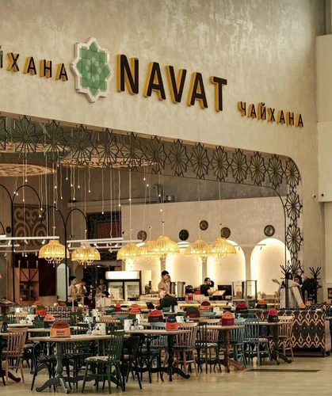
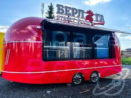

О маршруте
Путь знаний и культуры: от старейших учебных заведений до книжных сокровищ.
☕ Еда
🧶 Пешком
📷 Фото

Казахский национальный университет им. аль-Фараби (главный корпус)
ведущий вуз страны.
30 мин.

Библиотека им. Абая
тихое место с большим книжным фондом.
50 мин.

Казахская государственная филармония им. Жамбыла
культурный центр с академической музыкой.
1 ч.